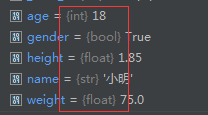
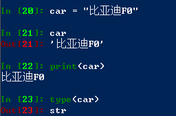

变量名 = 值
定义变量举例：
1 # 定义一个变量
2 myCar = "比亚迪F0"
3 # 输出一个变量
4 print(myCar)变量之间的简单运算举例：
1 price = 2.0
2 weight = 7.5
3 money = price * weight
4 print(money)注：变量名第一次出现的时候，才是定义变量；
再次出现，是使用变量。
1 name = "小明"
2 age = 18
3 gender = True
4 height = 1.85
5 weight = 75.0控制台输出：

注：Python定义变量时候，不需要指定变量类型；
变量会根据右边的变量值，自动推导出变量中存储数据的类型。
改变类型：
1 weight = 75.0
2 weight = "张三"
3
4 print(weight)注：控制台输出“张三”，强制改变类型，程序不会报错。会自动将类型值改变。
主要分为数字型和非数字型
数字型：
- 整型（int）
- 浮点型（float）
- 布尔型（bool）-- 非零即真
- 复数型（complex）用于科学计算
非数字型：
- 字符串
- 列表
- 元组
- 字典
IPython中获取变量类型的方法type(变量)：

注：Python2.X有long长整型的数据类型
Python3.X只有int，不需要程序员分析整型的长短。
数字类型之间可以直接运算：注释为输出结果
1 i = 10
2 f = 10.5
3 b = False
4
5 print(i + f) # 20.5
6 print(i + b) # 10
7 print(b + f) # 10.5
8
9 print(i * f) # 105.0
10 print(i * b) # 0
11 print(b * f) # 0.0
注：bool类型中 True = 1 , False = 0
字符串的拼接：
1 firstName = "张"
2 lastName = "三"
3 print(firstName + lastName) # 张三
4 print((firstName + lastName) * 3) # 张三张三张三
注：字符串和数字类型不能相加！
1 firstName = "张"
2 lastName = "三"
3 print(firstName + lastName + 10)Traceback (most recent call last):
File "XXXX/XXXX/XXXX.py", line 9, in <module>
print(firstName + lastName + 10)
TypeError: must be str, not int